Bonnes pratiques pour les projets statistiques
Une formation aux bonnes pratiques avec Git et R
Introduction
- Version longue de la formation aux bonnes pratiques avec
RetGit(page d’accueil)

Introduction
La notion de bonnes pratiques
Origine : communauté des développeurs logiciels
Constats :
- le “code est plus souvent lu qu’écrit” (Guido Van Rossum)
- la maintenance d’un code est très coûteuse
Conséquence : un ensemble de règles informelles, conventionnellement acceptées comme produisant des logiciels fiables, évolutifs et maintenables
Pourquoi s’intéresser aux bonnes pratiques ?
L’activité du statisticien / datascientist tend à se rapprocher de celle du développeur :
projets intenses en code
projets collaboratifs et de grande envergure
complexification des données et donc des infrastructures
déploiement d’applications pour valoriser les analyses
Bonnes pratiques et reproductibilité

Source : Peng R., Reproducible Research in Computational Science, Science (2011)
Une reproductibilité parfaite est coûteuse
Gitest un standard atteignable et efficient
Note
Quel socle de bonnes pratiques pour les projets statistiques en ?
Horizon de cette formation
Un point de départ commun
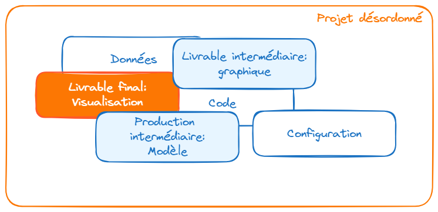Horizon de cette formation
Un point de départ commun
Une structuration de projet plus viable
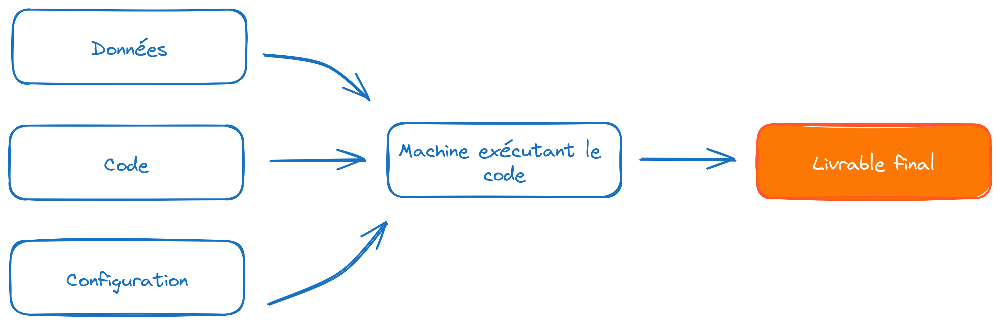
Partie 1 : contrôle de version avec Git
Plan de la partie
1️⃣ Le contrôle de version : pourquoi faire ?
2️⃣ Le contrôle de version avec Git
3️⃣ Le travail collaboratif avec Git
I- Le contrôle de version : pourquoi faire ?
1️⃣ Archiver son code proprement
pour en finir avec ça :

1️⃣ Archiver son code proprement
ou ça :

1️⃣ Archiver son code proprement
ou encore ça :
prior <- read_csv(prior_path)
prior <- prior |>
select(id, proba_inter, proba_build, proba_rfl) |>
separate(id, into = c('nidt', 'grid_id'), sep = ":") |>
group_by(nidt) |>
mutate(
proba_build = proba_build/sum(proba_build),
proba_rfl = proba_rfl/sum(proba_rfl),
) |>
unite(col = "id", nidt, grid_id, sep = ":")
# Test
# prior_test <- prior |>
# mutate(
# proba_inter = round(proba_inter, 4)
# proba_build = round(proba_build, 4)
# proba_rfl = round(proba_rfl, 4)
# )
write_csv(prior_round, "~/prior.csv")1️⃣ Archiver son code proprement
Pour arriver à ça :

Source : ThinkR
2️⃣ Voyager dans le temps (de votre projet)

3️⃣ Une collaboration simplifiée et efficace
Un modèle distribué

Source : specbee.com
3️⃣ Une collaboration simplifiée et efficace
Qui permet l’expérimentation en toute sécurité

Source : lutece.paris.fr
3️⃣ Une collaboration simplifiée et efficace
Quel que soit l’environnement de travail

3️⃣ Une collaboration simplifiée et efficace
Avec des outils pour faciliter la collaboration

4️⃣ Partager son code à un public large
Une vitrine pour les projets et l’organisation

En résumé
Construire et naviguer à travers l’historique de son projet
La collaboration rendue simple et efficace
Améliorer la reproductibilité de ses projets
Améliorer la visibilité de ses projets
II- Le contrôle de version avec Git
⚠️ Git est complexe
L’utilisation de Git nécessite certaines notions préalables:
- Fonctionnement d’un
filesystem - Connaissance basique du terminal
Linux - Potentiellement, un grand nombre de commandes

⚠️ Git est complexe
Mais
- L’usage quotidien n’implique que quelques commandes
- Les messages de
Gitsont très informatifs - Enormément de ressources disponibles sur internet
- Des interfaces visuelles (ex:
RStudio,Sublime Merge,VS Code) qui facilitent l’apprentissage - Un petit investissement individuel pour de gros gains collectifs
Concepts
Git, GitHub, GitLab… quelles différences ?
Gitest un logiciel ;- Utilisation en ligne de commandes
- Différentes interfaces graphiques (
RStudio,VS Code…)
Concepts
Git, GitHub, GitLab… quelles différences ?
GitHubetGitLabsont des forges logicielles- Forge: espace d’archivage de code
- Des fonctionalités supplémentaires : réseau social du code
Astuce
GitHub: utilisation pour les projets open-sourceGitLab: utilisation pour les projets internes
Concepts
Dépôt local / dépôt distant (remote)

- Par défaut, le dépôt distant porte l’alias
origin
Concepts
Workflow local

Source : Git Documentation
Concepts
Workflow complet

Commandes essentielles
| Action | Commande |
|---|---|
| Cloner un projet | git clone [url-to-git-repo] |
| Afficher les changements | git status |
| Retrouver l’URL du dépôt distant | git remote -v |
Commandes essentielles
| Action | Commande |
|---|---|
Ajouter des changements à l’index de Git (stage fixes) |
Un seul fichier : git add <file-name> Tous les fichiers déjà indexés : git add -u Tous les fichiers ⚠️ : git add -A |
Warning
La méthode git add -A peut amener à suivre les modifications de fichiers qui ne devraient pas l’être (par exemple, des données).
Il est recommandé de bien réfléchir avant de l’utiliser (ou d’avoir un bon .gitignore)
Commandes essentielles
| Action | Commande |
|---|---|
Faire un commit |
git commit -m "message" |
Pousser les changements locaux vers le dépôt distant (branche master) |
git push origin master |
Récupérer les changements sur le dépôt distant (branche master) |
git pull origin master |
Modes d’authentification
- https
git clone https://github.com/username/projet.git- simple à utiliser
- authentification username + password (ou token) à chaque push
- ssh
git clone git@github.com:username/projet.git- (plus) complexe à initialiser
- authentification automatique
- https
git clone https://gitlab.insee.fr/username_or_groupname/projet.git- simple à utiliser
- authentification username + password (ou token) à chaque push
- ssh
git clone git@gitlab.insee.fr:username_or_groupname/projet.git- (plus) complexe à initialiser
- authentification automatique
Application 0
Préparation de l’environnement de travail
- Créer un compte
GitHub - Créer un nouveau dépôt privé sur
GitHuben incluant un fichierREADME - Créer un compte sur le SSP Cloud
- Lancer un service
RStudio. Dans l’onglet de configurationGitdu service, fixer la durée duCachepour le stockage des identifiantsGitHubà une valeur suffisamment élevée - Cloner le dépôt distant sur votre environnement local (ici, le
RStudioduDatalab):File→New project→Version Control→Git
- Générer un token (jeton d’authentification) sur
GitHub - Stocker le token sur le
SSP Cloud(ou un gestionnaire de mot de passe) :Mon Compte->Git->Token d'accès personnel pour Forge Git
- Terminer la procédure de clonage en fournissant le nom d’utilisateur
GitHubet le token
Préparation de l’environnement de travail
- Compte déjà créé sur le gitlab interne
- Créer un nouveau dépôt privé sur
gitlab.insee.fr - Créer un compte sur LS3 via AUS.
- Lancer un service
RStudio. Dans l’onglet de configurationGitdu service, fixer la durée duCachepour le stockage des identifiantsGitlabà une valeur suffisamment élevée - Cloner le dépôt distant sur votre environnement local (ici, le
RStudiode la plateformeLS3):File→New project→Version Control→Git
- Générer un token (jeton d’authentification) sur
gitlab.insee.fr - Stocker le token sur
LS3(ou un gestionnaire de mot de passe) :Mon Compte->Git->Token d'accès personnel pour Forge Git
- Terminer la procédure de clonage en fournissant le nom d’utilisateur (IDEP) et le token
❓ Question : qu’est ce qui différencie le projet cloné d’un projet quelconque ?
Application 1
Premiers commits
- Créer un dossier 📁
scripts - Y créer les fichiers
script1.Retscript2.R, chacun contenant quelques commandesRde votre choix - Ajouter ces fichiers à la zone de staging de Git en les cochant dans l’interface
RStudio - Effectuer un
commit, auquel on donnera un message descriptif pertinent - Supprimer le fichier
script1.Ret modifier le contenu du fichierscript2.R - Analyser ce qui se passe lorsque l’on coche ces fichiers dans l’interface
RStudio - Effectuer un nouveau commit pour ajouter ces modifications à l’historique
- Visualiser l’historique du projet à partir de l’interface graphique de
RStudio
❓ Question : à ce stade, le dépôt du projet sur GitHub / Gitlab (remote) a-t-il été modifié ?
Application 2
Interactions avec le dépôt distant
- Effectuer un
pushpour intégrer les changements locaux au projet distant - Parcourir l’historique du projet sur
GitHub/Gitlab- Faire apparaître les différences entre deux versions consécutives du projet
- Afficher une version passée du projet
Bonnes pratiques
Que versionne-t-on ?
- Essentiellement du code source
- Pas d’outputs (fichiers
.html,.pdf, modèles…) - Pas de données, d’informations locales ou sensibles
Note
Pour définir des règles qui évitent de committer tel ou tel fichier, on utilise un fichier nommé .gitignore.
Si on mélange du code et des éléments annexes (output, données…) dans un même dossier, il faut consacrer du temps à ce fichier.
Des modèles de .gitignore existent sur internet, par exemple celui-ci pour les projets .
N’hésitez pas à y ajouter des règles conservatrices (par exemple *.csv), comme cela est expliqué dans la documentation utilitR.
Bonnes pratiques
Format des commits
- Fréquence
- Aussi souvent que possible
- Le lot de modifications doit “avoir du sens”
- Messages
- Courts et informatifs (comme un titre de mail)
- Décrire le pourquoi plutôt que le comment dans le texte

Application 3
Le fichier .gitignore
L’objectif de cette application est de créer le fichier .gitignore, qui permet de spécifier l’ensemble des fichiers et/ou dossiers que l’on souhaite exclure de l’indexation faite par Git. Il doit se situer à la racine du projet.
- S’il n’existe pas, créer un fichier texte nommé
.gitignoreà la racine du projet (attention à ne pas ajouter d’extension au fichier, type.txt) - Créer un dossier
dataà la racine du projet et créer à l’intérieur de celui-ci un fichierdata/raw.csvavec une ligne de données quelconque - Ajouter une première règle au fichier
.gitignorequi exclue le dossierdata/, et vérifier que la règle fonctionne - Ajouter une seconde règle excluant tous les fichiers de type
*.pdfet*.html, et vérifier que la règle fonctionne
❓ Question : que se passe-t-il lorsque l’on ajoute au .gitignore des fichiers qui ont déjà été commit sur le projet Git ?
Des fichiers .gitignore standards
Dans cette application, nous avons généré le fichier .gitignore manuellement. En pratique, il existe des .gitignore standards adaptés pour chaque langage de programmation, qui implémentent déjà de nombreuses règles pertinentes. Le mieux est donc de partir du .gitignore R pour tout nouveau projet R, et de rajouter les règles spécifiques que l’on souhaite appliquer au projet.
III- Le travail collaboratif avec Git
Outils pour le travail collaboratif
- L’éco-système
Gitfacilite le travail collaboratifGit: modèle des branchesGitHub/GitLab: Issues, Pull Requests, Forks
- Ces outils ne remplacent pas une bonne définition de l’organisation du travail en équipe
- Choix d’un workflow
- Droits d’accès
- Règles de contribution
Application 4
Synchronisation des dépôts
- Se mettre par groupes de 3/4 personnes:
- Une personne aura la responsabilité d’être mainteneur
- Deux à trois personnes seront développeurs
- Le mainteneur crée un dépôt sur
Github/Gitlab. Il/Elle donne des droits au(x) développeur(s) du projet - Créer une copie locale (clone) du projet sur son service
RStudio - Créer un fichier
<votre_nom>-<votre_prenom>.md. Écrire dedans trois phrases de son choix sans ponctuation ni majuscules, puiscommitetpushles modifications - À ce stade, une seule personne (la plus rapide) devrait ne pas avoir rencontré de rejet du
push. C’est normal ! Le premier ayant fait unpusha modifié le dépôt commun ; les autres doivent intégrer ces modifications dans leur version locale (pull) avant d’avoir le droit de proposer un changement. - Néanmoins, le
pullrenvoie également une erreur :Gitne parvient pas à résoudre la divergence d’historique. Essayons de comprendre le problème et les solutions possibles.
Divergence d’historiques : cas simple
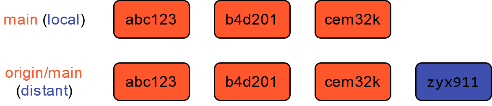Gitrésout le problème via un fast-forward merge- Le commit distant est rajouté à l’historique local
- Les dépôts sont synchronisés
Divergence d’historiques : cas compliqué

Gitne peut pas résoudre de lui même la divergenceDeux stratégies possibles
- Le merge
- Le rebase
1ère possibilité : le merge
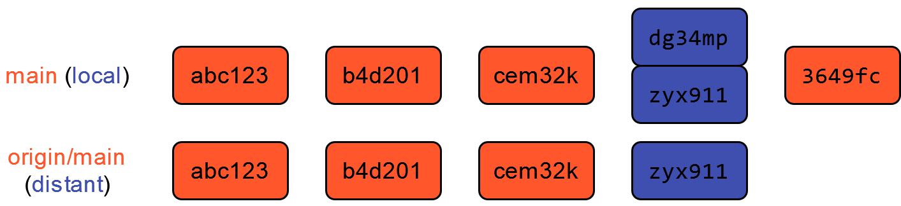Gitcrée un commit de merge- Comportement par défaut (jusqu’à récemment)
- Inconvénient : rend l’historique non-linéaire (plus d’explications)
2ème possibilité : le rebase (1/2)
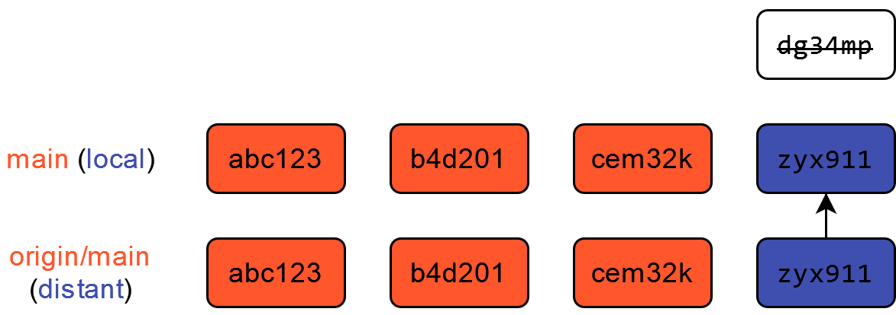Giteffectue 3 étapes- Supprime temporairement le commit local
- Réalise un fast-forward merge
- Rajoute le commit local au bout de l’historique
2ème possibilité : le rebase (2/2)
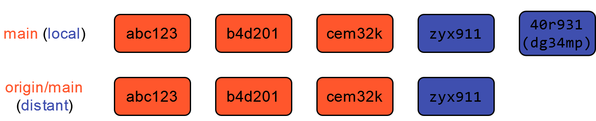Avantage : l’historique reste linéaire
Attention : ne jamais rebase des commits déjà poussés sur un dépôt public (plus d’explications)
Application 4
Synchronisation des dépôts
- Dans notre cas, on va conserver le précédent défaut (le commit de merge). Comme l’interface
RStudione permet pas (encore) de sélectionner la stratégie depull, on va préciser la configuration voulue via une commande passée dans le terminalgit config pull.rebase false
- Pour ceux dont le
pusha été refusé, effectuer unpulldes modifications distantes via l’interfaceRStudio - Effectuer à nouveau un
pushde vos modifications locales - Les derniers membres du groupe devront refaire les étapes précédentes, potentiellement plusieurs fois, pour pouvoir
pushleurs modifications locales
❓ Question : que se serait-il passé si les différents membres du groupe avaient effectué leurs modifications sur un seul et même fichier ?
Application 5
Résoudre les conflits
- On se place dans la même configuration que dans l’application précédente : un mainteneur et deux/trois développeurs
- Le mainteneur modifie le contenu de son fichier, puis
commitetpushles modifications - Sans faire de
pullpréalable, les développeurs modifient également le contenu du fichier du mainteneur, puiscommitetpushles modifications - Le
pushest rejeté pour la même raison que dans l’application précédente : les dépôts ne sont plus synchronisés, il fautpullles changements distants au préalable. Mais cette fois, lepullest également rejeté : il y a un conflit entre l’historique du projet distant et celui du projet local.Gitnous indique qu’il faut résoudre le conflit avant de pouvoir modifier l’historique du projet. - Utiliser l’interface de
RStudiopour résoudre le conflit, en choisissant la version du fichier que vous souhaitez conserver, puiscommit/pushles modifications - Comme dans l’application précédente, seul le développeur le plus rapide parvient à
push. Les autres doivent répéter l’opération.
❓ Question : comment limiter au maximum la survenue des conflits d’historique ?
Le modèle des branches

Le modèle des branches
Exemple d’organisation : le GitHub flow

Description plus détaillée : ici
Application 6
Branches, issues et pull requests
- Sur
Github/Gitlab, chaque personne ouvre uneIssuesur le même dépôt que les applications précédentes, dans laquelle vous suggérez une modification à apporter à votre projet - Créer une branche dont le nom indique la modification que vous allez apporter (ex :
ajout-authentification) - Effectuer un
commitavec les modifications de votre choix, puis pousser les changements sur une nouvelle branche du dépôt distant - Ouvrir une
Pull Request(PR) pour proposer d’intégrer vos changements sur la branche principale du dépôt distant. Spécifier que l’acceptation de laPull Requestentraînera la fermeture automatique de l’Issueassociée en écrivant dans le corps de laPR:close #NoùNest le numéro de l’Issueen question - Chaque personne effectue finalement une review d’une
PRd’un autre membre de l’équipe, suite à quoi les différentesPRpeuvent être fusionnées
❓ Question : quelle organisation pour merge dans la branche principale ?
Application 7
Contribuer à un projet collaboratif
L’objectif de cette application est d’initier au mode de contribution à un dépôt collaboratif. Concrètement, vous allez ouvrir une Issue sur un dépôt d’un autre développeur, en proposant des modifications. Puis, comme vous êtes très motivés, vous allez soumettre une Pull Request qui propose une solution à l’Issue.
- Ouvrir une
Issuesur le dépôtgit-exoen suggérant une modification à apporter au fichierREADME.md - Sur
GitHub, faire unForkdu dépôtgit-exo - Créer une branche portant un nom pertinent au vu de la modification que vous voulez apporter
- Effectuer un
commitavec les modifications de votre choix, puis pousser les changements sur votreFork - Ouvrir une
Pull Request(PR) pour proposer d’intégrer vos changements dans la branche principale (main) du dépôtgit-exo - Dans le corps de votre
PR, indiquezclose #NoùNest le numéro de votreIssue. Comme ça, lorsque laPRsera acceptée, l’Issueinitiale sera automatiquement fermée !
❓ Question : pourquoi, avec un fork, est-il très important de toujours effectuer une Pull Request à partir d’une branche différente de la branche principale ?
Ressources supplémentaires
La documentation
utilitRpropose plusieurs chapitres surGitCours Reproductibilité et bonnes pratiques pour les projets de data science de l’
ENSAELa Bible de l’usage de
Git
Partie 2 : bonnes pratiques avec R
Plan de la partie
1️⃣ Qualité du code
2️⃣ Structure des projets
3️⃣ Formats de données
4️⃣ Environnements reproductibles
5️⃣ R en production
Application 0
Préparation de l’environnement de travail
- Créer un dépôt sur
Githuben incluant un fichierREADMEet un.gitignore(chercher le modèleRdans les suggestions) - Lancer un service
RStudio. Dans l’onglet de configurationGitdu service, fixer la durée duCachepour le stockage des identifiantsGitHubà une valeur suffisamment élevée (conseil: 36000) - Cloner le dépôt distant sur votre environnement local (ici, le
RStudioduDatalab):File→New project→Version Control→Git
- Créer un script
get_data.Ren copiant le contenu de ce fichier, puis l’exécuter - Créer le script
script.Rdans votre dépôt en copiant le contenu de ce fichier. Ne l’exécutez pas, c’est l’objet de l’exercice suivant. - Ajouter la règle “RPindividus*” au fichier
.gitignore. Que signifie-t-elle ? - Commit/push les changements (tous les fichiers, y compris ceux que
Gita ajouté)
Préparation de l’environnement de travail
- Créer un nouveau dépôt public sur
GitLab - Lancer un service
RStudio. Dans l’onglet de configurationGitdu service, fixer la durée duCachepour le stockage des identifiantsGitLabà une valeur suffisamment élevée - Cloner le dépôt distant sur votre environnement local (ici, le
RStudiodeLS3):File→New project→Version Control→Git
- Créer un script
get_data.Ren copiant le contenu de ce fichier, puis l’exécuter - Créer le script
script.Rdans votre dépôt en copiant le contenu de ce fichier - Ajouter la règle “individu_reg.*” au fichier
.gitignore. Que signifie-t-elle ? - Commit/push les changements
I- Qualité du code
Enjeux
D’une vision utilitariste du code à une vision du code comme outil de communication
Favoriser la lisibilité et la maintenabilité
Faciliter la réutilisation
Assurer la transparence méthodologique
Principes généraux
1️⃣ Adopter les standards communautaires
2️⃣ Eviter la duplication de code
3️⃣ (Auto)-documenter son code
4️⃣ Isoler la configuration du code
1️⃣ Adopter les standards communautaires
“Good coding style is like correct punctuation: you can manage without it, butitsuremakesthingseasiertoread”
Respecter les conventions du langage dans lequel il est rédigé
Il existe un guide de référence pour bien coder en
R: le Tidyverse style guide.
1️⃣ Adopter les standards communautaires
Deux outils pratiques aident à respecter les standards :
- linter : programme qui vérifie que le code est formellement conforme à un certain guidestyle
- signale problèmes formels, sans corriger
- formatter : programme qui reformate un code pour le rendre conforme à un certain guidestyle
- modifie directement le code
Astuce
- Exemples d’erreurs repérées par un linter :
- lignes de code trop longues ou mal indentées, parenthèses non équilibrées, noms de fonctions mal construits…
- Exemples d’erreurs non repérées par un linter :
- fonctions mal utilisées, arguments mal spécifiés, structure du code incohérente, code insuffisamment documenté…
1️⃣ Adopter les standards communautaires
Dans le cas de :
2️⃣ Utiliser des fonctions
Règle d’or
Il faut utiliser une fonction dès qu’on utilise une même portion de code plus de deux fois (don’t repeat yourself (DRY))
- Limite les risques d’erreurs liés aux copier/coller
- Rend le code plus lisible et plus compact
- Un seul endroit du code à modifier lorsqu’on souhaite modifier le traitement
- Facilite la réutilisation et la documentation du code !
Règles pour écrire des fonctions pertinentes
- Une tâche = une fonction
- Une tâche complexe = un enchaînement de fonctions réalisant chacune une tâche simple
- Limiter l’utilisation de variables globales.
3️⃣ Documenter son code
- Grands principes :
- Documenter le pourquoi plutôt que le comment
- Privilégier l’auto-documentation
Comment bien documenter un script ?
- Minimum 🚦 : commentaire au début du script pour décrire ce qu’il fait
- Bien 👍 : commenter les parties “délicates” du code
- Idéal 💪 : documenter ses fonctions avec la syntaxe
roxygen2.
3️⃣ Documenter son code
L’auto-documentation en pratique
👎 La documentation pallie des mauvais nommages
# Utilise string si x est non manquant et non vide
if (!is.na(x) && nzchar(x)) {
use_string(x)
}👍 Les nommages suffisent à comprendre le code
x_is_not_empty_string <- (!is.na(x) && nzchar(x))
if (x_is_not_empty_string) {
use_string(x)
}4️⃣ Isoler la configuration du code
- Rappel : on vise une structure modulaire
- En pratique : isoler les packages et les secrets
4️⃣ Gestion des packages
- Externaliser l’installation des packages nécessaires
- Le code ne doit pas modifier l’environnement
- Où ? Dans le
READMEou des fichiers spécialisés (DESCRIPTIONourenv.lock)
- Expliciter l’appel des packages avec la syntaxe
package::fonction()- Favorise la lisibilité du code
- Limite les risques de fonctions “masquées”
Exemple
package1etpackage2contiennent chacun une fonction appeléesuper_fonction.- Si
package2est chargé aprèspackage1, alors la fonction depackage1est automatiquement masquée etsuper_fonctiondésigne par défaut la fonction depackage2. - Mieux vaut noter
package1::superFonctionetpackage2::superFonction
4️⃣ Gestion des secrets
Les secrets (mots de passe, tokens, etc.) sont des données sensibles
Quelques principes de sécurité essentiels
- Utiliser des tokens plutôt que des mots de passe
- Utiliser des comptes de service (quand c’est possible)
- Jamais de secrets en clair dans le code
En pratique, deux recommendations selon l’usage
- Demander interactivement le secret à l’utilisateur
- Spécifier des variables d’environnement via le fichier .Renviron (⚠️ à ajouter au
.gitignore)
Ressources supplémentaires
- Une présentation de Maëlle Salmon sur le « code beau ».
- Une présentation très complète sur le partage de code et de données avec
R - Une documentation (en anglais) sur la gestion des secrets (tokens, mots de passe, etc.)
Application 1
Partie 1 : vérification du bon fonctionnement du code
Un code reproductible est avant toute chose un code fonctionnel !
- Repérez les erreurs qui empêchent le script
script.Rde s’exécuter correctement, et les corriger. - Redémarrer votre session avec
Session>New Session(ou Ctrl+Maj+F10) et refaire tourner le code de A à Z. Avez-vous une erreur ?
Les pièges que cet exercice vous montre
- Les fonctions utilisées sans import des packages
- Les chemins et le working directory
- L’ordre des imports
- Les mauvaises pratiques de gestion de l’environnement (les bonnes pratiques arrivent dans les prochains exercices !)
Application 1
Partie 2 : premiers standards de qualité
- Installer les packages
Rlintretstyler1. - Définir le linter à utiliser comme étant de type
tidyverseaveclintr::use_lintr(type = "tidyverse") - Diagnostiquer le script
script.Raveclintr::lint("script.R").- Comprenez-vous la nature des problèmes détectés par le linter?
- Appliquer le formatter au
script.Ravecstyler::style_file("script.R"). - Refaire tourner le linter. Il reste encore un certain nombre d’erreurs de formattage, car
stylerest un formatter peu intrusif. - Regarder les problèmes restants repérés par le linter, et en corriger quelques uns (un pour chaque type de problème).
Application 1
Partie 3 : une meilleure gestion des packages utilisés
- Limiter les ambiguités sur les packages en utilisant la syntaxe
package::fonctionpour les packages rarement utilisés dans le script. - L’installation des packages dans un script n’est pas une bonne pratique. Supprimer les instructions correspondantes.
- Importer le
tidyverseau complet est rarement utile. N’importer à la place que les packages effectivement utilisés dans le script.
A propos du rm(list = ls()) (le supprimer !)
rm(list = ls()) (le supprimer !)Cette commande est une mauvaise pratique.
On la retrouve encore dans trop de scripts car elle est utilisée pour de mauvaises raisons. Elle ne remets pas à 0 votre environnement: elle supprime juste les données de celui-ci, sans toucher au reste (packages importés, etc.).
Il vaut mieux gérer cela en changeant les options de puis redémarrer la session (CTRL+SHIFT+F10)
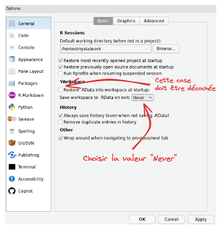
Application 1
Partie 4 : (auto-)documentation du code
L’objectif de cet exercice est de remettre de l’ordre dans le script, cela le rendra bien plus lisible.
- Déplacer les
librarypour les mettre tous ensemble au début du script. - Le script n’est pas construit dans un ordre logique. Déplacer les parties pour adopter une structure plus lisible :
- Gestion de l’environnement -> Définition de fonctions -> Import des données -> Retraitement des données -> Statistiques descriptives -> Graphiques -> Modélisation
- Donner des titres aux parties/sous-parties en utilisant les standards de documentation reconnus par RStudio :
# TITRE NIVEAU 1 ------------et## TITRE NIVEAU 2 ==========
Au passage, vous pouvez changer les noms de certains objets pour les rendre moins cryptiques (df3 n’est pas très clair).
Application 1
Partie 5 : une meilleure gestion des secrets
Dans cette application, on va explorer deux manières possibles de gérer les secrets proprement.
Première possibilité : de manière interactive.
- Repérer le jeton d’API dans le code et le retirer, en le stockant temporairement ailleurs.
- Utiliser la fonction askForPassword du package
rstudioapi, qui permet de demander à l’utilisateur d’entrer le secret à l’aide d’un pop-up interactif. - Vérifier le bon fonctionnement de la solution implémentée.
⚠️ Cette solution nécessite l’exécution du code dans un environnement RStudio, ce qui implique un usage en self.
Deuxième possibilité : via les variables d’environnement.
- Supprimer la solution précédente (pop-up interactif) et redémarrer le kernel R
- Créer un fichier
.Renviron(voir cette fiche UtilitR pour plus d’info sur ce fichier) à la racine du projet et y ajouter une ligneJETON_API=xxxen remplaçantxxxpar la valeur du jeton. - Importer la valeur du jeton dans une variable
api_tokenà l’aide de la fonction Sys.getenv. - Vérifier le bon fonctionnement de la solution implémentée.
- Vérifier que l’exclusion du
.Renvironest bien renseigné dans le.gitignore. Si ce n’est pas le cas, ajouter la règle et vérifier son bon fonctionnement, puis commit/push.
Checkpoint
Checkpoint
- Le script
script.R - Le
.gitignore

Bilan
- Un code mal structuré
- Limite la lisibilité du projet
- Est très coûteux à maintenir (dette technique)
- Les petits gestes peuvent économiser un temps précieux
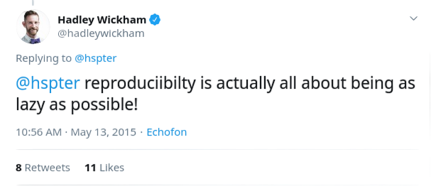
II- Structure des projets
Enjeux
Favoriser la lisibilité et la maintenabilité
Construire des projets reproductibles
⚠️ A ne pas reproduire chez vous
├── report.Rmd
├── correlation.png
├── data.csv
├── data2.csv
├── fig1.png
├── figure 2 (copy).png
├── report.pdf
├── partial data.csv
├── script.R
└── script_final.RSource : eliocamp.github.io
Principes généraux
Utiliser les projets RStudio
Organiser son projet en sous-dossiers
Donner des noms pertinents aux fichiers
Documenter son projet
(Faire de son projet un package)
1️⃣ Utiliser les projets RStudio
- Objectif : favoriser la reproductibilité
- Tous les fichiers nécessaires au projet dans un même dossier
- Le dossier contenant le projet RStudio est automatiquement utilisé comme working directory
- Utilisation de chemins relatifs plutôt qu’absolus.
- Bonus : en utilisant
Git, on s’assure de toujours travailler dans un projet RStudio !
2️⃣ Organiser son projet en sous-dossiers
- Objectif : adopter une structure arbitraire, mais lisible et cohérente
├── data
│ ├── raw
│ │ ├── data.csv
│ │ └── data2.csv
│ └── derived
│ └── partial data.csv
├── R
| ├── script.R
│ ├── script_final.R
│ └── report.Rmd
└── output
├── fig1.png
├── figure 2 (copy).png
├── figure10.png
├── correlation.png
└── report.pdf3️⃣ Donner des noms pertinents aux fichiers
- Objectif : auto-documenter son projet
├── data
│ ├── raw
│ │ ├── dpe_logement_202103.csv
│ │ └── dpe_logement_202003.csv
│ └── derived
│ └── dpe_logement_merged_preprocessed.csv
├── R
| ├── preprocessing.R
│ ├── generate_plots.R
│ └── report.Rmd
└── output
├── histogram_energy_diagnostic.png
├── barplot_consumption_pcs.png
├── correlation_matrix.png
└── report.pdf4️⃣ Documenter son projet
Le fichier
README.md, situé à la racine du projet, est à la fois la carte d’identité et la vitrine du projetIdéalement, il contient :
- Une présentation du contexte et des objectifs
- Une description de son fonctionnement
- Un guide de contribution (open-source)
Quelques modèles de
README.mdcomplets :
5️⃣ Faire de son projet un package
- Un package est la forme maximale de modularité
- Contient des fonctions rangées dans des modules
- Contient également de la documentation, des tests, des (méta-)données…
- Avantages
- Idéal pour favoriser la réutilisation du code
- Des outils de développement :
devtoolsetusethis
- Inconvénients
- Coût de maintenance élevé
Ressources supplémentaires
- La documentation utilitR sur les projets RStudio et les packages R
- La bible des packages R
Application 2
Partie 1 : modularisation du projet
- Déplacer toutes les fonctions dans un fichier
R/functions.R. - Donner à la fonction
fonction_de_stat_agregeeun nom plus pertinent et des noms d’arguments plus transparents.- Documenter la fonction
fonction_de_stat_agregeeselon le standardroxygen. Vous pouvez vous aider d’une IA assistante commeChatGPT,ClaudeouCopilot, rien n’est sensible dans ce code (d’ailleurs rien de sensible ne doit être dans du code !). - Utiliser les exemples d’utilisation de
fonction_de_stat_agregeedans cette documentation.
- Documenter la fonction
- Dans
script.R, appeler en début de chaîne ces fonctions avecsource("R/functions.R", encoding = "UTF-8"). - Tester le bon fonctionnement de
script.R. - Si votre chaîne écrit des outputs ou utilise des inputs (par exemple des données), restructurer l’aborescence du projet pour le rendre plus lisible et adaptez votre code en fonction.
- Renommer (voire déplacer) les scripts
get_data.Retscript.Rpour rendre plus intelligible la chaîne de production. - Mettre à jour le
.gitignorepuis commit/push.
Application 2
Partie 2 : création d’un package (FACULTATIF)
- Fermer le Rproj en cours (“Close Project” en haut à droite).
- Initialiser un package avec la fonction
usethis::create_package()(par défaut dans le working directory) - Placer dans le dossier
Rdu package un modulestat.Ret y copier la fonction de statistique agrégée - Remplir le fichier
DESCRIPTION. En particulier, spécifier les dépendances nécessaires (Imports) et facultatives (Suggests) - Construire la documentation du package avec la fonction
devtools::document(). Où est-elle stockée et sous quel format ? - Charger le package avec la fonction
devtools::load_all()et vérifier que la fonction marche correctement - Vérifier que la documentation de notre fonction est accessible avec
?ma_fonction - (Facultatif) Initialiser un nouveau projet sur
GitHubest y mettre le code du package. Vérifier que le package peut être installé en local avec la fonctiondevtools::install_github().
Checkpoint
Checkpoint
- Le script
script.R - Le script
R/functions.R
III- Formats de données
Enjeux
- Le choix d’un format de données répond à un arbitrage entre plusieurs critères :
- Public cible
- Finalité (traitement, analyse, diffusion)
- Volumétrie
- Interopérabilité
Formats traditionnels
- Formats de données adhérents à un langage (sas7bdat, RDS, fst, etc.)
- Non-interopérables -> à éviter !
- Le format CSV
- Interopérable et simple d’utilisation
- Pas de gestion des méta-données
- Peu adapté aux données volumineuses
Limites du CSV
- Des performances limitées
- Stockage : non-compressé -> espace disque élevé
- Lecture : “orienté-ligne” -> performances faibles
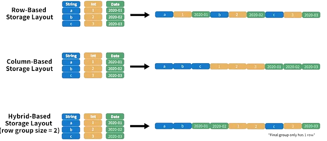
Le format Parquet
- Stockage :
- Compression : entre 5 et 20 fois plus léger qu’un CSV
Exemple: Recensement de la Population
- Ficher détail : 20 millions de lignes, 92 variables
- CSV: > 4Go
- Parquet: < 500Mo
Le format Parquet
- Lecture :
- Jusqu’à 34x plus rapide qu’un CSV
- “Orienté colonne”
- Optimisé pour les traitements analytiques
- Limite la quantité de données à mettre en mémoire
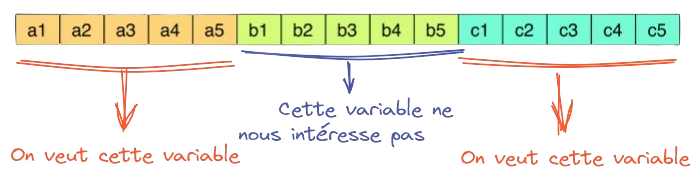
Le format Parquet
- Partitionner les données pour optimiser la lecture
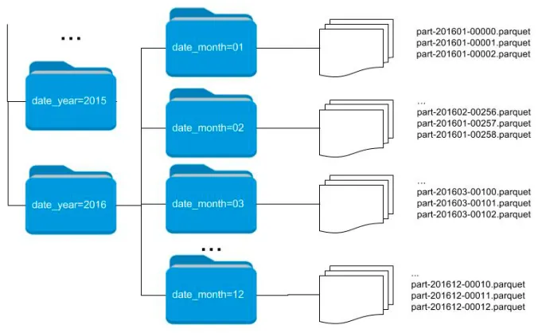
L’art de bien partitionner
Partitionner par une/des variable(s) d’intérêt
Eviter de créer de nombreux petits (< 128Mo) fichiers
Le format Parquet
Gestion native des méta-données
- Définition automatique d’un schéma (noms, types)
- Mise à disposition plus robuste
Interopérable
Open-source
Le format Parquet
- Deux frameworks de référence : Arrow et DuckDB
- Orientation fichier (
Arrow) VS orientation BDD (DuckDB) - Très bonne intégration avec le
tidyverse
- Orientation fichier (
- Traitement en-mémoire optimisé
- Orientés-colonne
- Lazy evaluation
Exemple d’une requête lazy
n_logements_depcom <- achille |>
filter(dep %in% c("01", "02", "03")) |> # Récupère seulement les données nécessaires
select(idlogement, depcom) |> # Récupère seulement les colonnes nécessaires
group_by(depcom) |>
summarise(n_logements = n()) |>
collect() # Les calculs ne sont effectués qu'à cette étape !Le format Parquet
Parquetgagne sur tous les tableaux
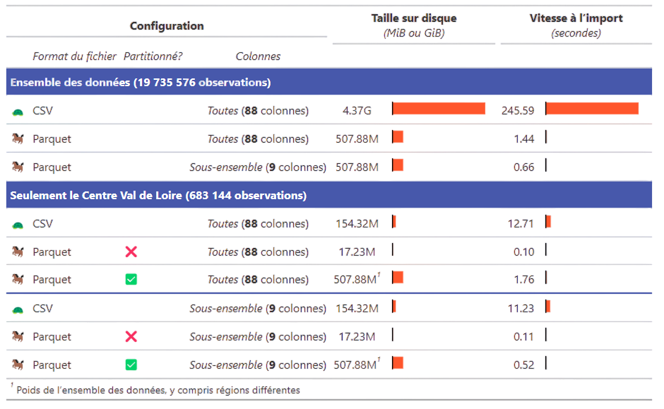
Application 3
Partie 0 : Préparation
- Remplacer le contenu du script
get_data.Ren copiant-collant le contenu de ce fichier. Exécuter ce script, il importe les fichiers nécessaires pour cette application.
Partie 0 : Préparation
- Remplacer le contenu du script
get_data.Ren copiant-collant le contenu de ce fichier. Exécuter ce script, il importe les fichiers nécessaires pour cette application.
Application 3
Partie 1 : Du CSV au Parquet
Tout au long de cette application, nous allons voir comment utiliser le format Parquet de manière la plus efficiente. Afin de comparer les différents formats et méthodes d’utilisation, nous allons comparer le temps d’exécution et l’usage mémoire d’une requête standard. Commençons par comparer les formats CSV et Parquet.
- Créer un script
benchmark_parquet.Rafin de réaliser les différentes comparaisons de performance de l’application - Pour effectuer les comparaisons de performance, on va utiliser la fonction bench::mark. Analyser la documentation pour comprendre ce que la fonction attend en entrée.
- La requête suivante permet de calculer les données pour construire une pyramide des âges sur un département donné, à partir du fichier
CSVdu recensement. Encapsuler la requête dans une fonctionreq_csv(sans argument).
res <- readr::read_csv("data/RPindividus_24.csv") |>
filter(DEPT == "36") |>
group_by(AGED, DEPT) |>
summarise(n_indiv = sum(IPONDI))- Sur le même modèle, construire une fonction
req_read_parquetbasée cette fois sur le fichierdata/RPindividus_24.parquetchargé avec la fonction read_parquet d’Arrow - Comparer les performances (temps d’exécution et allocation mémoire) de ces deux méthodes grâce à la fonction bench::mark, à laquelle on passera les paramètres
iterations = 1(comparaison à partir d’une seule itération) etcheck = FALSE(autorise les outputs des deux fonctions à être différents).
❓️ Quelle semble être la limite de la fonction read_parquet ?
Application 3
Partie 2 : Exploiter la lazy evaluation et les optimisations d’Arrow
La partie précédente a montré un gain de temps considérable du passage de CSV à Parquet. Néanmoins, l’utilisation mémoire était encore très élevée alors qu’on utilise de fait qu’une infime partie du fichier. Dans cette partie, on va voir comment utiliser la lazy evaluation et les optimisations du plan d’exécution effectuées par Arrow pour exploiter pleinement la puissance du format Parquet.
- Utiliser la fonction arrow::open_dataset pour ouvrir le fichier
data/RPindividus_24.parquet. Regarder la classe de l’objet obtenu. - Afficher les 5 premières lignes de la table avec la fonction
head(). Observer l’objet obtenu (sortie en console, classe). - Ajouter une étape
collect()à la fin de cette chaîne. Comprenez-vous la différence ? - Construire une fonction
req_open_datasetsur le modèle de celles de la partie précédente, qui importe cette fois les données avec la fonction arrow::open_dataset - Comparer les performances (temps d’exécution et allocation mémoire) des trois méthodes (
CSV,read_parquetetopen_dataset) grâce à la fonction bench::mark
❓️ Quelle méthode retenir pour lire un Parquet avec Arrow ?
Application 3
Partie 3 : Le Parquet partitionné
La lazy evaluation et les optimisations d’Arrow apportent des gain de performance considérables. Mais on peut encore faire mieux ! Lorsqu’on sait qu’on va être amené à filter régulièrement les données selon une variable d’intérêt, on a tout intérêt à partitionner le fichier Parquet selon cette variable.
- Parcourir la documentation de la fonction arrow::write_dataset pour comprendre comment spécifier la clé de partitionnement d’un fichier
Parquet. Plusieurs méthodes sont possibles ! - Importer la table individus complète du recensement
data/RPindividus.parquetavec la fonction arrow::open_dataset et l’exporter en une tabledata/RPindividus_partitionne.parquetpartitionnée par la région (REGION) et le département (DEPT) - Observer l’arborescence de fichiers de la table exportée
- Modifier la fonction
req_open_datasetde la partie précédente pour partir de la table complète (non-partitionnée)data/RPindividus.parquetau lieu de l’échantillon - Construire une fonction
req_open_dataset_partitionnesur le modèle dereq_open_dataset, qui importe cette fois les données partitionnéesdata/RPindividus_partitionne.parquet. Ne pas oublier de spécifier le paramètrehive_style = TRUE. - Comparer les performances (temps d’exécution et allocation mémoire) des deux méthodes grâce à la fonction bench::mark
❓️ Dans le cadre d’une mise à disposition de données en Parquet, comment bien choisir la/les clé(s) de partitionnement ? Quelle est la limite à garder en tête ?
Application 3
Partie 4 : mise à jour de la chaîne de production
Convaincus par ce comparatif, nous allons maintenant mettre à jour le format des données utilisées pour notre chaîne de production.
- Modifier le script
script.Rpour importer les données d’entrée de votre chaîne à partir de la tableParquetpartitionnéedata/RPindividus_partitionne.parquet - Vérifier que le script complet s’exécute correctement et l’adapter si ce n’est pas le cas
❓️ Cette mise à jour des données utilisées en source de la chaîne de production vous a-t-elle paru compliquée ? Pourquoi ?
Checkpoint
Checkpoint
- Le script
benchmark_parquet.R - Le script
script.R
IV- Environnements reproductibles
Enjeux
Imaginons la situation suivante :
- J’installe une version de
Rsur mon poste - Je développe un projet en installant les packages nécessaires
- Une fois terminé, je passe au projet suivant, et ainsi de suite.
- J’installe une version de
Quels problèmes puis-je rencontrer au fil des projets ?
Est-il facile de partager un de mes projets ?
Enjeux
Version de R fixe, celle de l’installation système
Conflits de version : différents projets peuvent requérir différentes versions d’un même package.
Reproductibilité limitée : difficile de dire quel projet nécessite quel package.
Portabilité limitée : difficile de préciser dans un fichier les dépendances spécifiques à un projet.
Des environnements reproductibles avec renv
renvpermet de créer des environnements reproductiblesIsolation : chaque projet dispose de sa propre librairie de packages
Reproductibilité :
renvenregistre les versions exactes des packages nécessaires au projetPortabilité: un tiers peut exécuter le projet avec les mêmes spécifications
Utilisation de renv
Initialisation (
init) de l’environnement local du projetDéveloppement du projet
Enregistrement (
snapshot) des versions des packages installésRestauration (
restore) d’un environnement
1️⃣ Initialisation de l’environnement
renv::init()dans un projet RStudio crée :- Un dossier
renvet le fichier.Rprofile: activation automatique de l’environnement - Le fichier
renv.lock: versions des packages installés
- Un dossier
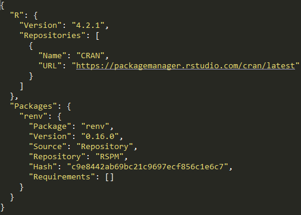
2️⃣ Développement du projet
- Une fois l’environnement initialisé, on développe le projet de manière habituelle :
- Installations/suppressions/mises à jour de packages
- Ecriture de scripts
renv::status(): indique les packages installés/supprimés par rapport au fichierrenv.lock
3️⃣ Enregistrement de l’environnement
renv::snapshot(): enregistre les versions des packages installés dans le fichierrenv.lockNe pas oublier de committer le fichier
renv.lock!

4️⃣ Restauration de l’environnement
renv::restore(): installe/désinstalle les packages nécessaires pour arriver à l’état spécifié dans le fichierrenv.lockPortabilité : un tiers peut recréer un environnement avec les mêmes spécifications
Application 4
Partie 0 : Préparation
- Remplacer le contenu du script
get_data.Ren copiant-collant le contenu de ce fichier. Exécuter ce script, il importe les fichiers nécessaires pour cette application.
Partie 0 : Préparation
- Remplacer le contenu du script
get_data.Ren copiant-collant le contenu de ce fichier. Exécuter ce script, il importe les fichiers nécessaires pour cette application.
Application 4
Partie 1 : Initialisation de l’environnement virtuel
- Vérifier tout d’abord que vous arrivez à charger le package
sfavec la fonctionlibrary(). - Initialiser l’environnement virtuel avec la commande
renv::init(), lire le message et accepter. - Observer les nouveaux fichiers et dossiers qui sont apparus dans le projet. En particulier, comment
renva-t-il choisi les packages à ajouter au fichierrenv.lock? - Essayer de charger à nouveau le package
sf. Comprenez-vous pourquoi celui-ci n’est plus disponible ?
Application 4
Partie 2 : Mise à jour du fichier renv.lock
- Dans la partie sur les statistiques descriptives du script
script.R, ajouter ce morceau de code, qui produit une carte à l’aide du packagesf - Dans la console, faire
renv::status()et observer le message - Installer le package
sf - Effectuer à nouveau
renv::status()et observer le message - Intégrer les nouveaux packages au fichier
renv.lockavec la commanderenv::snapshot() - Effectuer à nouveau
renv::status()et observer le message - Faire un commit / push des différents fichiers qui ont été modifiés
Application 4
Partie 3 : Test de portabilité
- Ouvrir un nouveau projet
RStudioet cloner à nouveau votre dépôt (sous un nom différent) - Exécuter
renv::restore()pour installer les packages nécessaires à l’exécution du projet - Vérifier que le
script.Rs’exécute correctement dans ce nouveau projet - (optionnel) Si vous n’êtes toujours pas convaincu de la portabilité de la solution, ouvrir un nouveau service
RStudioet refaire les étapes précédentes
Checkpoint
Checkpoint
- Le script
script.R
Vers une reproductibilité optimale
Limites des environnements virtuels :
- Les librairies système ne sont pas gérées
- Lourdeur de la phase d’installation à chaque changement d’environnement
- Peu adaptés à un environnement de production
La conteneurisation (ex :
Docker) apporte la solutionIntuition : au lieu de distribuer la recette pour recréer l’environnement, distribuer directement une “machine” qui contient tout l’environnement nécessaire au projet
Ressources supplémentaires
V- R en production
De quoi parle-t-on ?
Production statistique : chiffres, données, analyses produits par l’Insee / les SSM
Production informatique : processus maintenus par la DSI sur des infrastructures avec “garantie de service”
Self de production : processus maintenus par le métier sur une infrastructure “self”
Code de production : code respectant des standards de qualité qui le rendent efficace et maintenable
R : un langage de production ?
Ra émergé dans la communauté statistique- Outils d’analyse interactive très développés
- Outils de développement limités
- L’éco-système tidyverse s’oriente vers des outils production-ready

Les trois commandements d’Hadley
- Le code de production a trois caractéristiques
- “Not just me”
- “Not just once”
- “Not just my computer”

Les trois commandements d’Hadley
- Le code de production a trois caractéristiques
- “Not just me”
- “Not just once”
- “Not just my computer”
“Not just me”
Penser son projet en termes de maintenabilité
Adopter les standards communautaires
- Git pour la traçabilité des choix
- Qualité du code (structure, documentation)
- Choix des packages (voir fiche UtilitR)
“Le simple fait qu’un package fasse (ou semble faire) ce que vous voulez n’est pas une raison suffisante de l’utiliser, surtout si votre programme doit rester fonctionnel pendant une longue période. Déterminer si on peut utiliser un package revient à faire un arbitrage entre avantages et inconvénients, et à évaluer le risque d’instabilité d’un package.”
“Not just me”
- Organiser le travail collaboratif
- S’accorder sur une organisation
- Des outils facilitant via l’écosystème
Git
- Traiter le code comme un élément méthodologique
- Revue de code
“Les développeurs, quel que soit leur rôle, y voient de multiples avantages et un contexte dans lequel ils peuvent se former mutuellement, maintenir l’intégrité des bases de code de leurs équipes et créer, établir et faire évoluer des normes qui garantissent la lisibilité et la cohérence du code.”
Sadowski et al., Modern code review: a case study at google (2018)
“Not just me”
Penser à l’expérience des utilisateurs finaux
Pour la mise à disposition de données : Parquet
- Interopérable et méta-données incluses
- Performances en stockage et en lecture
Pour la documentation / publication : quarto
- Intègre code et texte pour la reproductibilité
- Publication multi-formats (
pdf,odt,html)
Exemple “2 en 1” : utiliser les données RP en
Parquet
Les trois commandements d’Hadley
- Le code de production a trois caractéristiques
- “Not just me”
- “Not just once”
- “Not just my computer”
“Not just once”
Penser son projet en termes de reproductibilité
Une tâche de production
- Est répétée dans le temps
- Peut changer d’environnement (dev, test, prod…)
Problème : le monde “autour du code” évolue
- Spécifier et contrôler l’environnement
- Automatiser ce qui peut l’être
“Not just once”
- Les données changent
- Factoriser le code avec des fonctions
- Modéliser sa chaîne sous forme de DAG
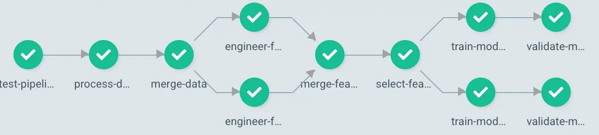
- Outil : {targets}
“Not just once”
Le code / les données changent… et cassent
Spécifier les attendus
- Tests unitaires : vérifie le bon comportement du code
- Validation de données : vérifie l’intégrité et la qualité des données
Outils : testthat et pointblank
“Not just once”
Les dépendances changent (fonctionnalités, bugs, failles de sécurité…)
Arbitrage entre évolutivité et stabilité
- L’évolution des dépendances est inhérente à la maintenance d’une chaîne de production
On limite les risques en spécifiant l’environnement
“Not just once”
- L’environnement change (OS, libs système,
R…)- Difficulté principale du passage en production
- La conteneurisation permet de fixer l’environnement
- Favorise la portabilité
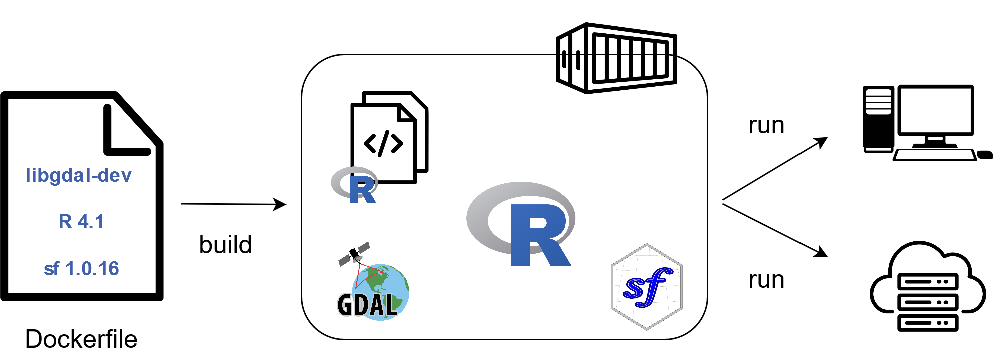
“Not just once”
Concevoir sa chaîne comme un pipeline de données
- Reproductibilité : étapes intégrées “de bout en bout”
- Stabilité : contrôle des évolutions
- Portabilité : fluidifie le changement d’architecture
Avantage supplémentaire : automatisation
Outil : intégration continue via
GitHub/GitLab- Accroît encore les bénéfices d’utiliser
Git!
- Accroît encore les bénéfices d’utiliser
Les trois commandements d’Hadley
- Le code de production a trois caractéristiques
- “Not just me”
- “Not just once”
- “Not just my computer”
“Not just my computer”
- Evolution continue vers des infrastructures de self “production-ready”
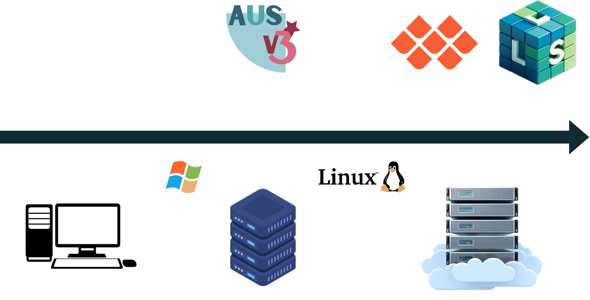
“Not just my computer”
OK, mais pourquoi 🤔 ?
Pourquoi migrer vers des infrastructures centralisées ?
- Centralisation : permet le passage à l’échelle
- Sécurité : évite la dissémination de données
Pourquoi migrer vers des infrastructures Kubernetes ?
- Tout ce qu’on pouvait faire avant… en mieux
- Nouveaux usages : déploiements (applications, API), calcul distribué, traitements ordonnancés…
- Autonomie (environnement, stockage, etc.)
“Not just my computer”
Un point de départ commun
“Not just my computer”
Un point de départ commun
Une structuration de projet plus viable
“Not just my computer”
Un point de départ commun
Une structuration de projet plus viable
Facilitée par l’éco-système cloud
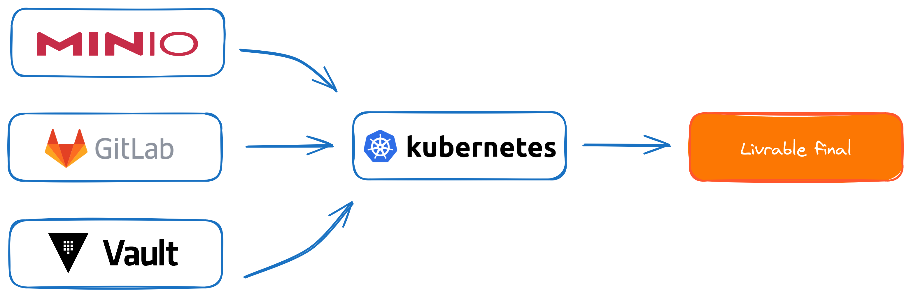
“Not just my computer”
Qu’est-ce qui change 🤔 ?
Techniquement, tout… ou presque !
- Du monde desktop au monde server
- Du monde Windows au monde Linux
En pratique, Onyxia facilite la transition
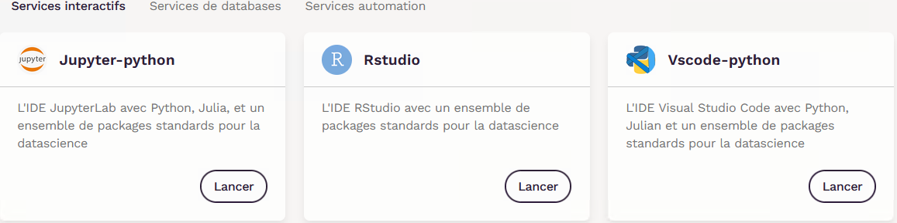
“Not just my computer”
Qu’est-ce qui change 🤔 ?
Monde conteneurisé : les traitements sont éphémères
- “Coût” de l’autonomie et de la mutualisation
- Mais source de reproductibilité !
“Not just my computer”
- Qu’est-ce qui change 🤔 ?
- Evolution du mode de stockage de données
- Infrastructures “bureau virtuel” : lecteurs partagés
- Le “bureau virtuel” simule le filesystem traditionnel
- Infrastructures cloud : stockage objet (
S3/MinIO)- Stockage très peu coûteux
- Autonomie : bucket personnel / de projet
- Fonctionnement différent des filesystems
“Not just my computer”
Qu’est-ce qui change 🤔 ?
Evolution de la nature des traitements
- Traitements interactifs pour le développement
- Traitements batch pour le déploiement
Le débogage devient moins immédiat
- Nécessité du logging : logger
Dépasser le “mur de la production”
- Une organisation limitée par l’hétérogénéité des environnements
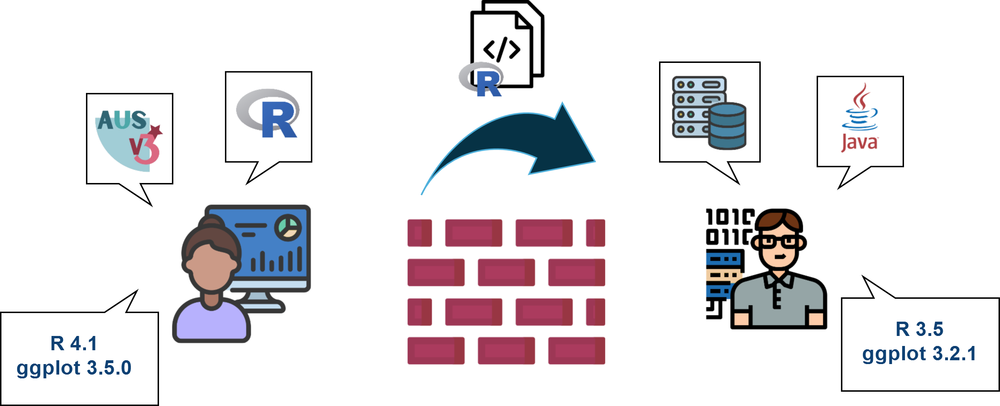
Dépasser le “mur de la production”
- L’opportunité d’organisations plus continues
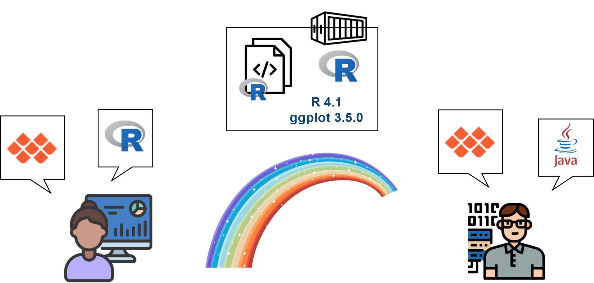
Application 5: partie 1
Partie 1 : transition vers le stockage S3
- En début de script, créer les chemins où les données pourront être trouvées (voir ci-dessous)
- Créer un connecteur
Arrowentre votre sessionRet l’espace de stockageS3
bucket <- s3_bucket(bucket_formation, endpoint_override = Sys.getenv("AWS_S3_ENDPOINT"))
bucket_path <- bucket$path(paste0(path_within_bucket, "/RPindividus"))- Dans
main.R, modifier les codes utilisantopen_datasetpour remplacer les chemins par la variablebucket_path.
df <- open_dataset(
bucket_path,
hive_style = TRUE
) %>%
filter(REGION == 24) %>%
select(any_of(columns_subset)) %>%
collect()- Si nécessaire, remplacer l’import du geojson
departements <- aws.s3::s3read_using(
FUN = sf::st_read,
object = "france.geojson",
bucket = paste0(bucket_formation, "/", path_within_bucket),
opts = list("region" = "")
)Connecteur pour la question 1
Application 5: partie 2
Partie 2 : orchestrer sa chaîne de production
Au fil des chapitres précédents, nous avons appliqué un ensemble de bonnes pratiques à notre chaîne de production pour accroître sa qualité et sa maintenabilité. Néanmoins, celle-ci est encore sous la forme d’un unique script.
De manière générale, on a plutôt envie de modéliser les étapes d’une chaîne comme une série de fonctions, avec une fonction “cheffe d’orchestre” qui appelle les autres dans le bon ordre.
- Créer les scripts suivants:
Modifier
main.Rpour tenir compte de la modularisation (version + sspcloud ou version + LS3)Passer la souris sur une des nouvelles fonctions et faire F1
targets: un orchestrateur formel
On aurait pu également utiliser un orchestrateur dédié pour effectuer cette tâche, comme le package targets. Les plus curieux d’entre vous pourront aller voir le chapitre et les exercices qui lui étaient auparavant dédiés dans cette formation.
Application 5: partie 3
Partie 3 : ajout de contrôles de qualité des données
Un critère de qualité majeur d’une chaîne de production est sa robustesse. Naturellement, les données en entrée de la chaîne peuvent évoluer dans le temps. Afin de gérer au mieux les risques posés par de telles évolutions, on va ajouter des contrôles sur la qualité des données, en entrée et en sortie de la chaîne.
Partie 4 : tests unitaires et versionnage de la chaîne
Notre chaîne tourne à présent de manière robuste. Pour autant, ce n’est pas un objet fixe : on peut vouloir lui apporter des corrections ou des améliorations fonctionnelles. Et ces modifications peuvent, à leur tour, provoquer des nouvelles erreurs. Pour gérer ces risques, on va : - versionner la chaîne, afin de certifier le code qui la fait tourner sans erreur à un moment T - implémenter des tests unitaires, qui permettent de continuer à modifier la chaîne sans risquer de régressions
Partie 5 : un rapport reproductible pour documenter sa chaîne de production
Une bonne manière de favoriser à la fois la maintenabilité de sa chaîne et la réutilisationde ses produits est de documenter son fonctionnement. Le format quarto — successeur de R Markdown — permet de reproduire facilement des rapports reproductibles, qui intègrent code et texte. En plus, ces rapports peuvent être facilement publiés en différents formats, du plus interactif (html) aux plus classiques (pdf, odt, etc.).
Partie 6 : automatiser la mise à disposition
On dispose finalement d’une chaîne orchestrée, robuste et bien documentée. Afin d’en faire une chaîne vraiment intégrée de bout en bout, on va automatiser les étapes, de sorte à ce que les modifications apportées au projet se répércutent sur ses sorties. Pour cela, on va utiliser les outils de l’intégration continue proposés par GitHub / GitLab.
Ressources supplémentaires
Cours Reproductibilité et bonnes pratiques pour les projets de data science de l’
ENSAEUn cours complet (en anglais) sur la reproductibilité avec
RConférence “R in production” d’Hadley Wickham (en anglais)
Le cours (en construction) “R in production” d’Hadley Wickham (en anglais)
Conclusion
Conclusion
Des standards communautaires qui favorisent la reproductibilité et la maintenabilité
De multiples outils pour simplifier leur mise en oeuvre
Un coût d’autant plus faible que l’on se place en amont
Le mouvement de modernisation du self est l’occasion d’une montée en compétence collective
Ressources communautaires
- Canaux de discussion
- A l’Insee
- Pour toute question sur Git : Insee-Git-Gitlab
- Pour toute question stat/self : Insee - Outils Stats v2
- Pour toute question spécifique à AUS/LS3 : Insee-DSI-Plateformes-Internes-Datascience
- Plus largement sur R
- Sur
Tchap: Langage R (Tchap) - Sur
Slack: r-grrr
- Sur
- A l’Insee
- Documentation
- Formation
Bonnes pratiques pour les projets statistiques (retour au site principal ; )